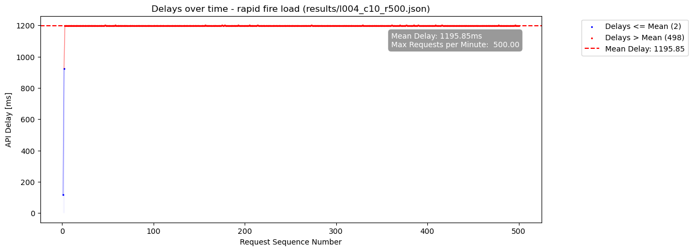
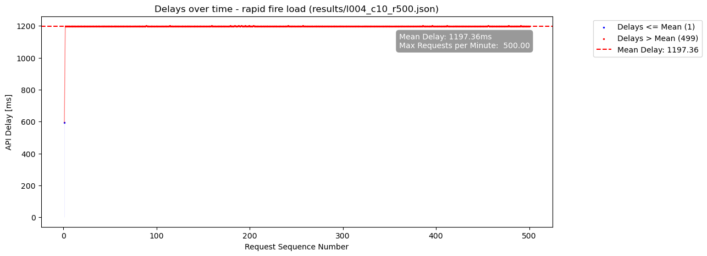
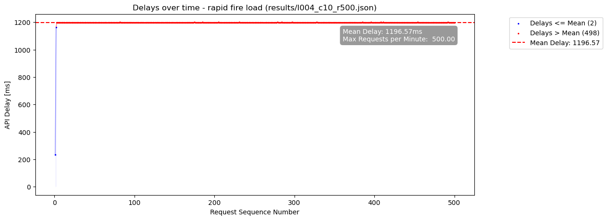
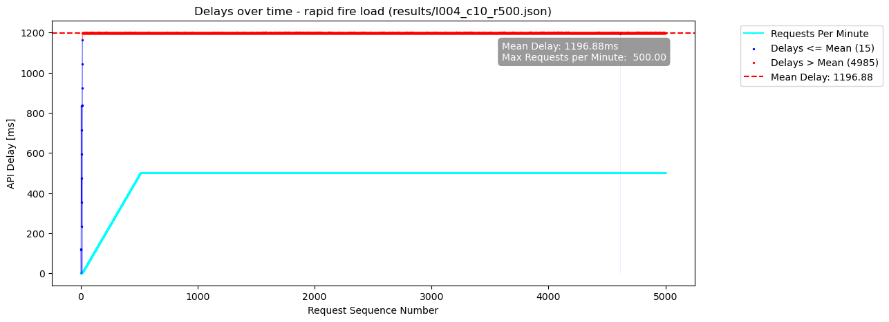
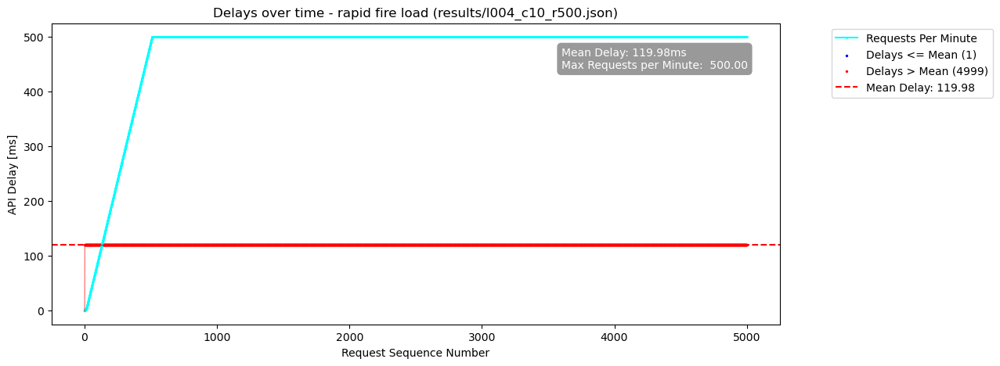

Report for results/l004_c10_r500.json
Server Config:
{'slug': '/api_guard', 'port': 5500, 'initial_limit': 500, 'num_workers': 10, 'api_token': 'renerocksai'}
Client Bot Config:
{'num_threads': 10, 'req_per_thread': 500, 'url': 'http://127.0.0.1:5500/api_guard/request_access?handle_delay=true', 'auth_bearer': 'renerocksai', 'out_file': 'results/l004_c10_r500.json'}
Client 0:

Client 1:

Client 2:
Client 3:
Client 4:

Client 5:

Client 6:
Client 7:
Client 8:
Client 9:

All Clients

Real Delays Between All Requests (including voluntary Client pauses)
